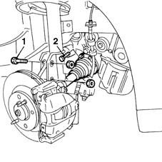
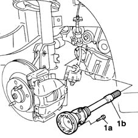

2710A31 intermediate drive shaft - r r
- Path
- Procedures > 27 AXLE > 2710 FRONT AXLE > 2710A drive shafts and joints > 2710A31 intermediate drive shaft - r r
- Kind
- repair procedure (removal / refitting; the operation number is the code)
- Applies to
- engines: 1.9 JTD 8V; all production periods
- Interactive page
- https://sloeber94.github.io/elrnDB-fMltpl/en/#/2891564
Applies to: engines: 1.9 JTD 8V; all production periods
 Removing
Removing
 Refitting
Refitting4450B10 Front WHEEL (one) - R.R.
7055B42 Additional FRONT WHEEL ARCH (one), left or right - R.R.
1. Undo the bolts securing the vertical link to the suspension.
2. Undo the bolts securing the drive shaft to the intermediate shaft and move the drive shaft aside.

Applies to: engines: 1.9 JTD 8V; all production periods
1. Undo the bolts (1a) and remove the intermediate drive shaft (1b).

Applies to: engines: 1.9 JTD 8V; all production periods
Refitting
RemovingFit the intermediate shaft and tighten the fixing bolts.
Tighten the new bolts fixing the driveshaft to the flange on the differential to torque.
 | Fastening | Component | Ø | Value (daNm) |
|---|---|---|---|---|
- | Bolt | FRONT DRIVE SHAFT COMPLETE WITH JOINTS | M8 | 4 |
Tighten the bolts securing the suspension vertical link to the shock absorber to the specified torque.
| Fastening | Component | Ø | Value (daNm) |
|---|---|---|---|---|
- | Nut | FRONT HUB STEERING KNUCKLE. | M10 | 7 |
7055B42 Additional FRONT WHEEL ARCH (one), left or right - R.R.